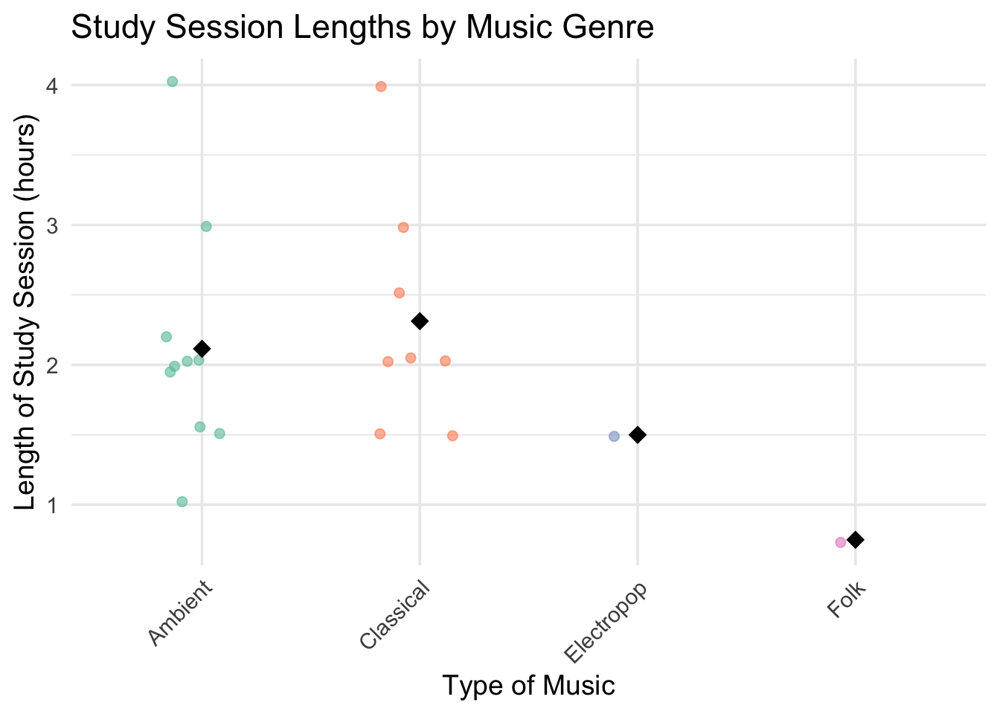

[To summarize my data in order to compare the response variable between categories, I should calculate the mean length of study sessions for each type of music to compare how different music genres might affect how long I am studying. This comparison would be informative because the type of music may influence focus and productivity, potentially leading to longer or shorter study sessions depending on the genre.]
##b.
#load in extra librarieslibrary(ggplot2)library(readxl)library(dplyr)#read in excel file data <-read_csv(here::here("data", "personal_data_project_DATA_Sheet1.csv")) #here::here so can read that csv in data folder # summarize data - mean study length per music genresummary_data <- data %>%group_by(`Type of Music`) %>%summarise(Mean_Length =mean(`Length of Study Session (hours)`, na.rm =TRUE))# actual plotggplot(data, aes(x =`Type of Music`, y =`Length of Study Session (hours)`, color =`Type of Music`)) +geom_jitter(width =0.2, alpha =0.6, size =2) +# show individual study sessionsstat_summary(fun = mean, geom ="point", shape =18, size =4, color ="black") +# mean pointsscale_color_brewer(palette ="Set2") +# colorful palettelabs(title ="Study Session Lengths by Music Genre",x ="Type of Music",y ="Length of Study Session (hours)",color ="Music Genre" ) +theme_minimal(base_size =14) +theme(axis.text.x =element_text(angle =45, hjust =1),legend.position ="none" )

##c. Caption [Figure 1.The length of each study session in hours by the type of music listened to during each session. Each point represents the length (in hours) of an individual study session under a specific type of music. Colored jittered points show the distribution of individual sessions, while black diamonds represent the mean study length for each genre. This visualization highlights how different music types may be associated with longer or shorter average study duration, which may have effects on productivity and how much work is accomplished during each study session.]
##d. Table presentation
# load extra extra librarylibrary(gt)# summarize data (mean study session length by type of music)summary_table <- data %>%group_by(`Type of Music`) %>%summarise(`Mean Study Length (hours)`=round(mean(`Length of Study Session (hours)`, na.rm =TRUE), 1))# create table summary_table %>%gt() %>%tab_header(title ="Average Study Session Length by Music Genre" ) %>%cols_label(`Type of Music`="Type of Music",`Mean Study Length (hours)`="Mean Length (hours)" ) %>%fmt_number(columns =`Mean Study Length (hours)`,decimals =1 )
Average Study Session Length by Music Genre
Type of Music
Mean Length (hours)
Ambient
2.1
Classical
2.3
Electropop
1.5
Folk
0.8
#Problem 2. Affective visualization
##a. Describe in words what an affective visualization could look like for your personal data
[An affective visualization for my personal data could use cool-toned, calming colors like soft blues and greens for music genres that correspond with longer, focused study sessions, and warm-toned, harsher reds or oranges for genres linked to shorter, more distracted sessions. Coloring with different brain wave patterns will represent how much activity and focus was happening during the types of music study session; tighter, closer together wave patterns are associated with gamma and beta waves, indicating times of deep focus in the brain whereas longer, rounder waves are associated with alpha and theta waves indicating times of relaxation and reflection in the brain. Including notes about what was going on during the study session and reflecting on my mood or feelings during each session could deepen the emotional connection that the data invokes; this would allow viewers to feel the impact of music on my study experience]
##b. Create a sketch (on paper) of your idea.
Sketch of affective visualization
##c. Make a draft of your visualization
Draft of affective visualization
##d. Write an artist statement [This piece shows the amount of focus and duration associated with study sessions where a particular type of music was listened. Cooler toned colors and tighter, steeper wave patterns are used for classical and ambient music as these types were found to be associated with deeper focus and longer duration during study session. Warmer toned colors and rounder, less tight waves were used for electropop and folk music as these types we found to be associated with shorter bursts of focus and less time spent working. I used a mix of pen and highlighter to have the color and notes represented and each music type was given its own font. My own doodles and personal art style were used as inspiration. The form of this work is on lined notebook paper and was made with a mix of ballpoint pen and highlighters. I created this work by writing out each name of music and drawing wave patterns in the associated color around each word. I then filled in notes and feelings that came up during each study session and how I felt during them.]
#Problem 3.Statistical critique
##a. Revisit and summarize [The questions that the authors are addressing is whether the boundaries of a science identity shift for students in Hawai’i after being participants in a place-based experiential research training program as well as does repeated exposure to such communities and practices have effects on students science identity over time, particularly in the transition from high school to undergrad. Upon further reviewing of this study, it was found that the authors primarily used repeated-measures ANOVA as well as t-test (two-tailed Student’s t-test) to analyze changes in marine science identity scores over time among the participants. This statistical approach allowed them to assess whether students’ identities significantly changed across multiple time points (before, during, and after the research experience). They also included comparisons to determine at which time points significant differences occurred. These analyses addressed the core research question about how students’ sense of identity in marine science developed over time. The response variable is the students’ science identity measured before and after the program via surveys, which addressed dimensions such as Performance, Competence, Interest, and Recognition; the predictor variable is participation in the program. There is not one singular figure that measures all of these parameters so only performance is included as an example]
##b. Visual clarity [The authors clearly displayed summary statistics using bar graphs with error bars representing standard error. The x-axis labels the topic areas clearly, although the rotated text can be a bit hard to read. Grouping by participant type (New Student vs. Mentor) and time point (pre vs. post) seems intuitive and is consistent throughout the figure. The underlying data (individual scores or distribution) is not shown; this limits transparency about score variability.]
##c. Aesthetic clarity [The figure is pretty clean with a good ratio of data to ink. There’s minimal visual clutter, and the use of asterisk and letter annotations effectively directs the reader to significant differences. However, the angle of the x-axis labels is slightly distracting and takes away some amount of legibility. The black-and-white color scheme is functional, but it could be enhanced with color to increase readability and accessibility]
##d. Recommendations [To improve this figure, I would recommend adding jittered dot plots or boxplots over the bars to show individual participant data, which would help visualize the spread and variance of scores. Also, replacing or supplementing the grayscale bars with color could improve clarity, especially for those with visual impairments. The x-axis labels should either be shortened or rotated horizontally if space allows, to also improve readability. A more direct comparison of pre/post scores could also be represented by connecting individual students’ pre- and post-scores with lines in a paired plot format. This would emphasize within-subject changes and strengthen the reader’s understanding of the learning impact.]